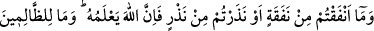
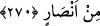

mânâlarıyla ortaya çıkar.
“Hikmet”, Allah Teâlâ’nın sıfatlarının nûrlarından bir nûrdur. Allah bu nûr ile
kullarından dilediği kimsenin aklını kuvvetlendirir. Bu iş akıl ile ve aklî ve naklî ilimler
yardımıyla idrâk edilemez. Akıl ile kavranabilecek şeyler ehl-i dîn ile ehl-i küfür
arasında müşterektir.
“Mâkul”, aklın aklî bir delil ile hakkında hüküm verdiği şeydir. Bu ise aklı olan ve
okumayı bilen kimseler için gayet kolaydır. Aklını vehimden ve hayâdan arındıran
kimse, mâkulu delil ile gerçek mânâda anlar. Aklını bu gibi âfetlerden arındırmayan ise
mâkulu, bilen birinin anlattıkları ile anlar. Hikmet ise bu kabilden değildir. Bunu ancak
“lübb” sahipleri anlar. Bunlar insânî aklın kabuklarıyla uğraşmayan, bilakis
peygamberlere ittibâ ederek onun özünü elde etmek için gayret gösteren kimselerdir.
Peygamberler de onları, insânî aklın kabuklarının karanlıklarından Rabbânî
mevhibelerin özündeki nûra çıkarmışlardır. Böylece onlar: “Allah’ın kendisi için nûr
yaratmadığı kimse için nûr yoktur.” (en Nûr, 24/40) âyetinin mânâsını anlamışlardır.
Ey dünyaya aldanan kişi Allah’ın afvına güvenerek şeytan seni aldatmasın. Nitekim Şâir
demiştir ki:
Kazâ-i ilâhînin sana nereden geldiğine bak.
Hak Teâlâdan başkasına güvenmek körlüktür ancak.
Çektiğimiz hep nefsimizdeki kötü sıfatlardandır.
Korkarım ki İblis’in insanlar hakkındaki zannı doğru çıkacak.
Rasûlullah (s.a.) şöyle buyurmuştur: “Allah’ın sağ eli zengindir, mal mülk doludur.
Gece ve gündüz bulutların dağıttığı nafaka onu bitiremez. Yeri ve göğü
yaratmasından beri Allah’ın infak ettiği ve rızık olarak verdiği şeyleri görmüyor
musun? İnfak edilen bunca şey bile onun yanında olanı bitiremedi.”[244]
Yine Rasûlullah (s.a.): “Allah’ın arşı su üzerindedir. Diğer elinde ise “kabz”; yâni
yakalama sıfatı vardır. Bununla dilediğini yüceltir, dilediğini de alçaltır.”
buyurmuştur. Mü’min Allah’ın ahlâkı ile ahlâklanır. Fakîrlere karşı cömert davranır.
Şeytanın verdiği fakirlik korkusu vesvesesini atar. Çünkü bütün rızıkların anahtarları
Allah’ın elindedir. Tek verici de O’dur. O’ndan başka veren yoktur.
270. Yaptığınız her harcamayı ve adadığınız her adağı muhakkak Allah bilir.
Zalimler için hiç yardımcı yoktur.
Allah Teâlâ, hak yolda veya bâtıl yolda gizli ve açık, az veya çok harcadığınız her
nafakayı; tâatte veya masiyette, şartlı veya şartsız, mala veya namaz, oruç v.s. fiillere